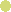
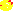
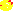
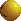

Cheats
Cheat codes for video games.
Navigate
Atari 2600
 Jr. Pac-Man
Jr. Pac-Man 
Custom (BizHawk)
73:06
Rack cheat (advance to next level instantly)
 Ms. Pac-Man
Ms. Pac-Man
Custom (BizHawk)
77:96:00:=
Eat a few dots to advance to the next level (varies by maze)
 Pac-Man
Pac-Man
Custom (BizHawk)
08:00
09:00
0A:00
0B:00
0C:00
0D:00
0E:00
0F:00
10:00
11:00
12:00
13:00
14:00
15:00
16:00
17:00
1A:00
Rack cheat (advance to next level instantly)
Nintendo Entertainment System/Famicom
 Ms. Pac-Man (Namco)
Ms. Pac-Man (Namco) 
Custom
003D:01
Eat one dot to advance to the next level
 Ms. Pac-Man (Tengen)
Ms. Pac-Man (Tengen) 
Custom
0383:00
Rack cheat (advance to next level instantly)
 Pac-Land
Pac-Land 
Custom
0513:00
0528:00
0529:00
052A:00
052B:00
052D:00
052E:00
052F:00
0530:00
0531:00
0532:00
No music
 Pac-Man
Pac-Man 
Custom
006A:01
Eat one dot to advance to the next level
 Sesame Street: Big Bird's Hide & Speak
Sesame Street: Big Bird's Hide & Speak 
Custom
0006:FF
0007:FD
Big Bird and some sounds will be heavily distorted
000C:FF
Big Bird will not speak and some sounds will not play
 Sesame Street: Countdown
Sesame Street: Countdown 
Custom
017A:00
Always pick a glitch number. "Ah, ah, ah!"
017A:01
Always pick the number one.
017A:02
Always pick the number two.
017A:03
Always pick the number three.
017A:04
Always pick the number four.
017A:05
Always pick the number five.
017A:06
Always pick the number six.
017A:07
Always pick the number seven.
017A:08
Always pick the number eight.
017A:09
Always pick the number nine.
017A:0A
Always pick the number ten.
017A:0B
Always pick a glitch number. "That's"
017A:0C
Always pick a glitch number. "No"
017A:0D
Always pick a glitch number. "Find"
017A:0E
Always pick a glitch number. "Got it"
017A:0F
Always pick a glitch number. "Not enough"
017A:10
Always pick a glitch number. "Let's go"
017A:11
Always pick a glitch number. "Try again"
017A:12
Always pick a glitch number. "(silence)"
017A:13
Always pick a glitch number. "Wonderful"
0374:00
0375:00
0376:00
0377:00
No music
04CE:00
In run mode, hold jump to bounce
 Super Mario Bros./Super Mario Bros. 2 (FDS)
Super Mario Bros./Super Mario Bros. 2 (FDS) 
Custom
001E:01
001F:01
0020:01
0021:01
0022:01
All enemies are invincible
001E:03
001F:03
0020:03
0021:03
0022:03
Some enemies are dead/untouchable
0024:02:00
0025:02:00
Fireball autofire
0039:00
All power-up question blocks contain a Super Mushroom
0039:01
All power-up question blocks contain a Fire Flower
0039:02
All power-up question blocks contain a Star
0039:03
All power-up question blocks contain a 1-Up Mushroom
0039:41
All power-up question blocks contain a Fire Flower that acts like a Star
0039:42
All power-up question blocks contain a Star (doesn't move)
00FB:00
00FC:00
No music
06CC:01
076A:01
07FC:01
Hard Mode
0733:01
Have mushroom/cloud platforms
orange & red palette on every level
0733:02
Turns all grassy/mushroom/cloud platforms into Bill Blasters
0743:00
Every sky bonus level is treated as a regular level
0743:01
Every level is treated as a sky bonus level
0754:01
0756:02
Small Fire Mario
075B:00
Removes invisible checkpoints
075E:65
Every coin gives a 1-up
 Super Mario Bros. 2 (FDS) Exclusives
Super Mario Bros. 2 (FDS) Exclusives
0039:04
All power-up question blocks contain a Poison Mushroom
 Super Mario Bros. 2
Super Mario Bros. 2 
Custom
0600:00
No music
0620:00
1-up won't respawn as vegetable if picked up again
062A:05
Every cherry spawns a Star
 Super Mario Bros. 3
Super Mario Bros. 3 
Custom
0014:01
Beat level instantly (won't work for final castle)
04F5:00
04F4:00
No music
054F:01
Have the spinning jump animation always (glitchy with Small/Frog Mario, can't use pipes)
0715:FF
0716:FF
0717:FF
Have infinite score (unlocks N-Spade after every level)
7D80:01
7D81:02
7D82:03
7D83:04
7D84:05
7D85:06
7D86:07
7D87:08
7D88:09
7D89:0A
7D8A:0B
7D8B:0C
7D8C:0D
Infinite of every item on map
7DA2:63
99 coins (every coin gives a 1-up)
 Super Mario World (bootleg)
Super Mario World (bootleg) 
Custom
008E:00
No music
0376:64
Every coin gives a 1-up
MSX
 Oh Shit! (bootleg)
Custom (blueMSX)
9B26:CC
Rack cheat (advance to next level instantly)
 Pac-Man
Pac-Man
Custom (blueMSX)
E408:B1
Eat one dot to advance to the next level
Sega Master System
 Ms. Pac-Man
Ms. Pac-Man 
Pro Action Replay
00D76A00
Rack cheat (advance to next level instantly)
 Sonic Blast
Sonic Blast 
Pro Action Replay
00D50000
No characters, no gameplay :)
00D522FF
Invincible after first hit
00D53D01
Moon jump (disables double jump/glide)
00D53E00
Infinite double jump (Sonic)
 Sonic Chaos
Sonic Chaos 
Pro Action Replay
00D3B200
Moon jump/Infinite jump
 Sonic's Edusoft (prototype)
Sonic's Edusoft (prototype) 
Pro Action Replay
00C84800
No music
 Sonic the Hedgehog
Sonic the Hedgehog 
Pro Action Replay
00D28E01
Moon jump/Infinite jump
00DC0800
00DC0A00
No music
 Sonic the Hedgehog 2
Sonic the Hedgehog 2 
Pro Action Replay
00D34F00
Invisible Sonic
00D3AA00
Moon jump/Infinite jump
00D50D11
Ultimate corruption (SEIZURE WARNING)
 Super Bioman I (bootleg)
Super Bioman I (bootleg) 
Pro Action Replay
00C070FF
Infinite lives
00C078FF
Infinite time
00C0D5FF
Invincible
00CA2100
00CA4100
00CA6100
No music (mostly)
 Super Boy I/II (bootleg)
Super Boy I/II (bootleg) 
Pro Action Replay
00C049FF
00C04AFF
Infinite time
00C23399
99 coins (every coin gives a 1-up)
00C23E00
Infinite jump
00C37201
Always be big
00C37301
Always have fire power
00C38300
Play the game during demos
00C38440
Play music at double the speed
00C384F0
Play music at half the speed
00DA2100
00DA4100
00DA6100
No music
 Super Boy 3 (bootleg)
Super Boy 3 (bootleg) 
Pro Action Replay
00C04200
00C06200
00C08200
No music
00C17800
Invincible
00C18D30
Infinite time
00C19001
Always be big
00C19101
Always have fire power
 Super Boy 4 (bootleg)
Super Boy 4 (bootleg) 
Pro Action Replay
00DB7701
Always be big
00DB7802
Always have fire power
00DB7901
Invincible
Atari 7800
 Ms. Pac-Man 
Custom (BizHawk)
08A8:01:01:<
Eat one dot to advance to the next level
Sega Genesis/Sega Mega Drive
 Ms. Pac-Man
Ms. Pac-Man 
Game Genie
AAJR-AAEB
Rack cheat (advance to next level instantly)
 Pac-Man 2: The New Adventures
Pac-Man 2: The New Adventures
Pro Action Replay
 Pac-Man/Pac-Jr.
Pac-Man/Pac-Jr. 
96GR-AAHT
Rack cheat (advance to next level instantly)
 Sonic the Hedgehog
Sonic the Hedgehog 
Pro Action Replay
AD2S-8EAC
Slow music
Game Boy/Game Boy Color
 Ms. Pac-Man/Ms. Pac-Man
Ms. Pac-Man/Ms. Pac-Man
Special Color Edition 
Game Genie
008-1A2-E6E
Rack cheat (advance to next level instantly)
 Pac-Man/Pac-Man
Pac-Man/Pac-Man
Special Color Edition 
Game Genie
B56-4C2-E6E
Eat two dots to advance to the next level
 Super Mario Bros. Deluxe
Super Mario Bros. Deluxe 
Game Genie
001-813
Infinite time
001-C13
011-D83
God mode
00E-112
00E-212
00E-312
00E-412
No music
631-F23
99 coins (every coin gives a 1-up)
FE1-D53
Invincible
FF1-DB3
021-DC3
Invincible (alternate)
 Super Mario Land
Super Mario Land 
Game Genie
00A-002
Infinite time (disable on level completion or you'll get stuck)
00F-112
00F-212
00F-312
00F-412
00F-D70
No music (alternate)
00F-E82
No music (breaks Star)
010-D33
Invincible (mutes level music)
022-083-E66
Moon jump
99A-152
Infinite lives
99F-FA0
99 coins (every coin gives a 1-up)
 Super Mario Land 2: 6 Golden Coins
Super Mario Land 2: 6 Golden Coins 
Game Genie
002-C85
Disable auto-scroll
004-115
004-215
004-315
004-415
No music
992-625
092-635
999 coins
992-8D5
99 enemy count (Every enemy killed grants a star)
FF2-715
Invincible
 Super Mario Special 3 (bootleg)
Super Mario Special 3 (bootleg) 
Game Genie
002-763
Invincible
Atari Lynx
 Ms. Pac-Man 
Ms. Pac-Man 
Custom (BizHawk)
1144:00
1145:00
1146:00
1147:00
Rack cheat (advance to next level instantly)
Game Gear
 Ms. Pac-Man
Ms. Pac-Man 
Pro Action Replay
00C14100
Rack cheat (advance to next level instantly)
 Pac-Man
Pac-Man 
Pro Action Replay
00C15300
Rack cheat (advance to next level instantly)
Sonic Blast
Pro Action Replay
00D50000
No characters, no gameplay :)
00D522FF
Invincible after first hit
00D53D01
Moon jump (disables double jump/glide)
00D53E00
Infinite double jump (Sonic)
Sonic Chaos
Pro Action Replay
00D3B200
Moon jump/Infinite jump
 Sonic the Hedgehog
Sonic the Hedgehog 
Pro Action Replay
00DC0800
00DC0A00
No music
Sonic the Hedgehog 2
Pro Action Replay
00D34F00
Invisible Sonic
00D3AA00
Moon jump/Infinite jump
00D50D11
Ultimate corruption (SEIZURE WARNING)
 Sonic the Hedgehog Triple Trouble
Sonic the Hedgehog Triple Trouble 
Pro Action Replay
00D3C300
Moon jump/Infinite jump
Super Nintendo Entertainment System/Super Famicom
Ms. Pac-Man
Pro Action Replay
7E026A00
Rack cheat (advance to next level instantly)
Pac-Man 2: The New Adventures
Pro Action Replay
Pac-Man/Ms. Pac-Man 
7E091000
Rack cheat (advance to next level instantly)
 Super Mario All-Stars
Super Mario All-Stars 
Pro Action Replay
7E006200
No music during title and game select
7E010311
Slightly pixelated
7E0103FF
Extremely pixelated
 Super Mario Bros./The Lost Levels
Super Mario Bros./The Lost Levels 
7E002900
7E002A00
7E002B00
7E002C00
7E002D00
7E002E00
7E002F00
7E003000
All enemies are invincible
7E002902
7E002A02
7E002B02
7E002C02
7E002D02
7E002E02
7E002F02
7E003002
Some enemies are dead/untouchable
7E020C00
All power-up question blocks contain a Super Mushroom
7E020C01
All power-up question blocks contain a Fire Flower
7E020C02
All power-up question blocks contain a Star
7E020C03
All power-up question blocks contain a 1-Up Mushroom
7E020C41
All power-up question blocks contain a Fire Flower that acts like a Star
7E020C42
All power-up question blocks contain a Star (doesn't move)
7E06CC01
7E076A01
7E07FC01
Hard Mode
7E071404
Duck jump for every jump
7E073302
Turns all grassy/mushroom/cloud platforms into Bill Blasters
7E074300
Every sky bonus level is treated as a regular level
7E074301
Every level is treated as a sky bonus level
7E075401
7E075602
Small Fire Mario
7E075B00
Removes invisible checkpoints
7E075E63
Every coin gives a 1-up
7E0E7E11
Slightly pixelated
7E0E7EFF
Extremely pixelated
7E160280
No music
 Super Mario Bros. Exclusives
Super Mario Bros. Exclusives
7E005C00
7E009908
7E00BA00
7E00DB01
Underwater theme for every level (includes water physics)
7E005C01
7E009912
7E00BA01
7E00DB07
Snow theme for every level
7E005C01
7E009917
7E00BA01
7E00DB05
Overworld theme for every level
7E005C02
7E009911
7E00BA02
7E00DB1A
Underground theme for every level
7E005C03
7E009904
7E00BA03
7E00DB1C
Underground theme for every level
7E073301
7E00DB12
Have mushroom platforms
mushroom platform background on every level
 The Lost Levels Exclusives
The Lost Levels Exclusives
7E020C04
All power-up question blocks contain a Poison Mushroom
7E073301
7E00DB24
Have cloud platforms
cloud background on every level
 Super Mario Bros. 2
Super Mario Bros. 2 
7E062000
1-up won't respawn as vegetable if picked up again
7E062A04
Every cherry spawns a Star
7E1DE200
No music
 Super Mario Bros. 3
Super Mario Bros. 3 
7E001401
Beat level instantly (won't work for final castle)
7E005A01
Enable spinning animation on map at all times (glitchy with all power-ups)
7E020D11
Slightly pixelated
7E020DFF
Extremely pixelated
7E054F01
Enable spinning jump animation at all times (glitchy with Small/Frog Mario, can't use pipes)
7E0715FF
7E0716FF
7E0717FF
Have infinite score (unlocks N-Spade after every level)
7E076901
7E076A01
7E076B01
7E076C01
7E076D01
7E076E01
7E076F01
7E077001
Some enemies/items will flash palettes
7E120200
No music
7E1D8001
7E1D8102
7E1D8203
7E1D8304
7E1D8405
7E1D8506
7E1D8607
7E1D8708
7E1D8809
7E1D890A
7E1D8A0B
7E1D8B0C
7E1D8C0D
Infinite of every item on map
7E1DA263
99 coins (every coin gives a 1-up)
7E1F5502
Music Box on every map
 Super Mario Bros. 3 (Battle Mode)
Super Mario Bros. 3 (Battle Mode) 
7E193E00
You can hit the POW block an infinite amount of times
7E19AB01
Mario will stay big
7E19AC01
Luigi will stay big
7E19B3FF
Mario will be invincible
7E19B4FF
Luigi will be invincible
 Super Mario Kart
Super Mario Kart 
Pro Action Replay
7E0E0C00
No music
 Super Mario World
Super Mario World 
Pro Action Replay
7E007100
Move around during level intro cutscenes, such as for castles
7E0DBF63
99 coins (Every coin gives a 1-up)
7E13E010
Diagonal Mario
7E13F4FF
7E13F5FF
7E13F6FF
7E13F7FF
7E13F8FF
Every block in the coin bonus game is a 1-up
7E16E10D
7E16E20D
7E16E30D
7E16E40D
7E16E50D
7E16E60D
Every point is a 1-up
7E16E10E
7E16E20E
7E16E30E
7E16E40E
7E16E50E
7E16E60E
Every point is a 2-up
7E16E10F
7E16E20F
7E16E30F
7E16E40F
7E16E50F
7E16E60F
Every point is a 3-up
7E16E110
7E16E210
7E16E310
7E16E410
7E16E510
7E16E610
Every point is a 5-up
7E1DFB00
No music
 Super Mario World 2: Yoshi's Island
Super Mario World 2: Yoshi's Island 
Pro Action Replay
7E004D00
7E004E00
No music
7E037B63
99 coins (Every coin gives a 1-up)
Neo Geo Pocket Color
Pac-Man 
Custom (BizHawk)
0E0E:F4
Rack cheat (advance to next level instantly)
Game Boy Advance
 Namco Museum
Namco Museum 
Codebreaker Advance
 Ms. Pac-Man
Ms. Pac-Man 
33000014 00FF
Rack cheat (advance to next level instantly)
Pac-Man Collection
Codebreaker Advance
Pac-Man 
3200C824 00F4
Rack cheat (advance to next level instantly)
Pac-Mania 
72016C73 0001
320166C4 006A
72016C73 0002
320166C4 006A
72016C73 000C
320166C4 006A
72016C73 000D
320166C4 006A
72016C73 000E
320166C4 006A
72016C73 0003
320166C4 008E
72016C73 0004
320166C4 008E
72016C73 0005
320166C4 008E
72016C73 000F
320166C4 008E
72016C73 0010
320166C4 008E
72016C73 0011
320166C4 008E
72016C73 0006
320166C4 0077
72016C73 0007
320166C4 0077
72016C73 0008
320166C4 0077
72016C73 0012
320166C4 0077
72016C73 0013
320166C4 0077
72016C73 0014
320166C4 0077
72016C73 0009
320166C4 00B0
72016C73 000A
320166C4 00B0
72016C73 000B
320166C4 00B0
72016C73 0015
320166C4 00B0
72016C73 0016
320166C4 00B0
72016C73 0017
320166C4 00B0
Rack cheat (advance to next level instantly)
 Pac-Man Arrangement
Pac-Man Arrangement 
32013C9A 0000
Rack cheat (advance to next level instantly)
 Super Mario Advance
Super Mario Advance 
Codebreaker Advance
330007E8 0000
33000838 0000
33000888 0000
330008D8 0000
33000928 0000
33000978 0000
No music after title
33001A26 0004
Every cherry spawns a Star